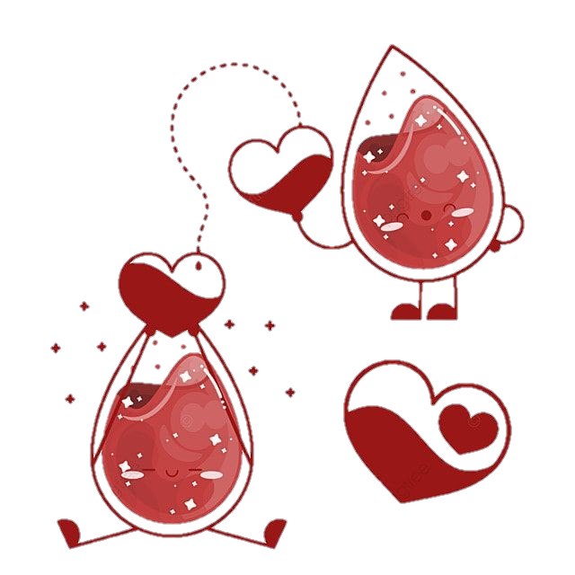
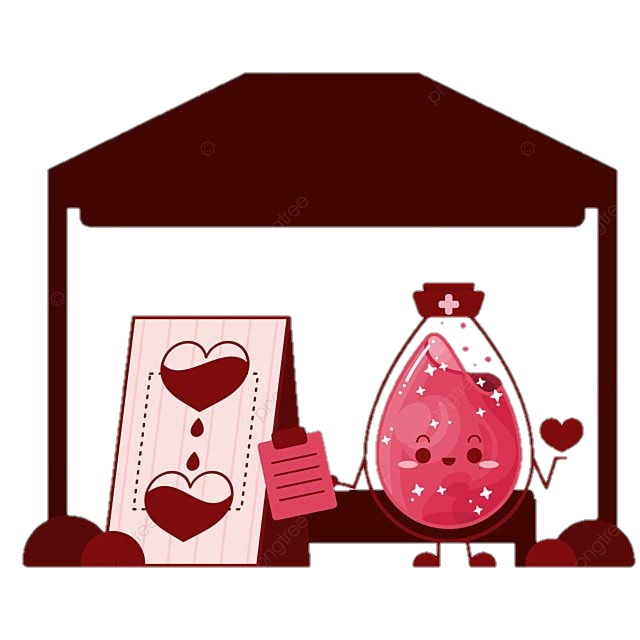

Doe sangue!
faça a vida fluir nas veias de quem precisa.
A doação de sangue é um ato altruista e de solidariedade, que ajuda a salvar muitas vidas. É um gesto de amor ao próximo que pode gerar muitos sorrisos. Cada doação pode salvar a vida de até quatro pessoas.
Dependem desse ato solidário pessoas que se submetem a tratamentos planejados e intervenções médicas urgentes de grande porte e complexidade, como transfusões, transplantes e procedimentos oncológicos. Sendo também necessárias em situações como anemias crônicas, cirurgias de urgência, acidentes que causam hemorragias, complicações da dengue, febre amarela, tratamento de câncer e outras doenças graves
O sangue é insubstituível e sem ele é impossível viver. Dessa forma, o Ministério da Saúde reforça periodicamente a importância de os brasileiros adotarem a cultura solidária da doação regular e espontânea de sangue no mês de junho.
O Brasil possui 2.097 serviços de hemoterapia (coleta, hemocentros, hemonúcleos, unidades de coleta e transfusão, agências transfusionais). Uma das estratégias da Política Nacional de Sangue, Componentes e Hemoderivados é o fortalecimento das estruturas de serviços
A nível nacional, aproximadamente 1,4% da população brasileira doa sangue, o que representa 14 pessoas a cada mil habitantes e um total de 3.159.774 milhões de doações de sangue por ano no Sistema Único de Saúde (SUS) Isso significa que o Brasil está dentro da recomendação da Organização Mundial de Saúde (OMS) de que 1% a 3% da população de cada país deve ser doadora. No entanto, o Ministério da Saúde reforça a importância de aumentar o número de doadores para manter os estoques de todo país regulares, sem risco de desabastecimento. As taxas de doação de sangue no Brasil cresceram em 2023. Entre janeiro e setembro de 2022 foram coletadas 2.340.048 bolsas de sangue (com 450 a 500mL cada). Este ano, no mesmo período, a coleta ficou em 2.452.425, o que representa aumento de 112.377 bolsas. Cada doação pode ajudar a salvar até 4 vidas.
O procedimento para doação de sangue é simples, rápido e totalmente seguro. Não há riscos para o doador, porque nenhum material usado na coleta do sangue é reutilizado, o que elimina qualquer possibilidade de contaminação. É preciso
Há situações temporárias e impeditivas para a doação de sangue. Seguem as principais causas de inaptidão
Todo sangue doado é separado em diferentes componentes como
e assim poderá beneficiar mais de um paciente com apenas uma unidade coletada. Os componentes são distribuídos aos hospitais para atender casos de emergência e pacientes internados.
| Tipo de sangue | Pode doar para | Pode receber de |
| O+ | O+, A+, B+ e AB+ | O+ e O- |
| O- | O+, A+, B+, AB+, O-, A-, B- e AB- | O- |
| A+ | A+ e AB+ | A+, A-, O+ e O- |
| A- | A+, A-, AB+ e AB- | A- e O- |
| B+ | B+ e AB+ | B+, B-, O+ e O- |
| B- | B+, B-, AB+ e AB- | B- e O- |
| AB+ | AB+ | O+,A+,B+, AB+, O-, A-, B- e AB- |
| AB- | AB+ e AB- | A- B- O- e AB- |
Os doadores de sangue podem procurar os postos de coleta mais próximos Você pode procurar em hospitais onde tem pontos de coletas mais próximos, ou pesquisa na internerte e ate mesmo visitar o site de infromaçõs locais do seu estado. Ao acessar o link vc poderá encontara alguns pontos de coletas nos estados https://lithealth.com.br/mapa-coleta-de-sangue
